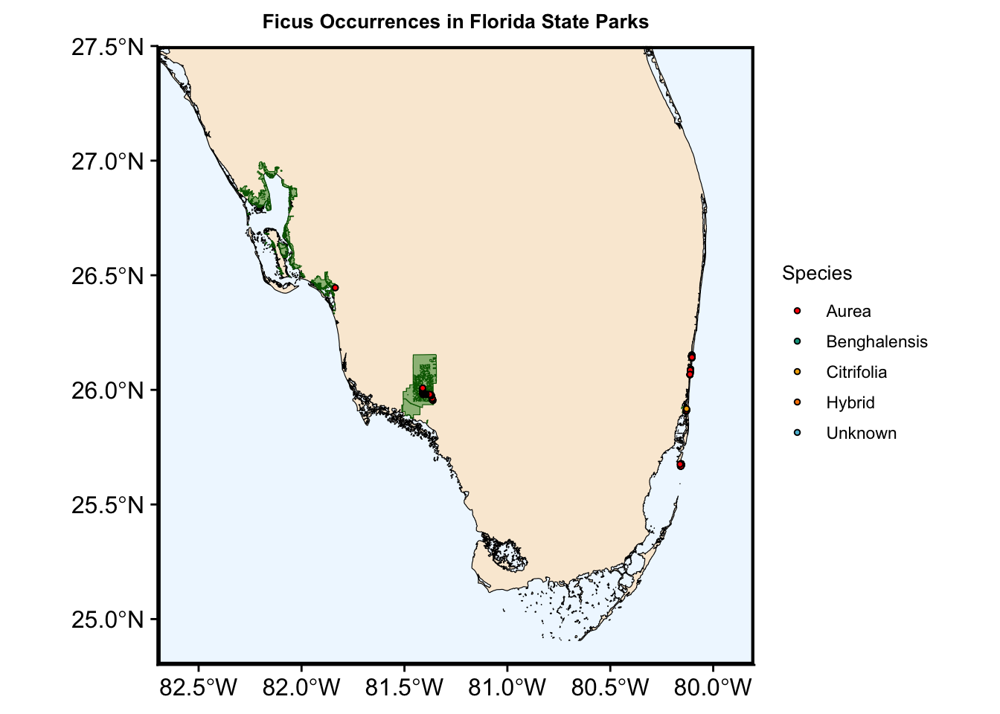
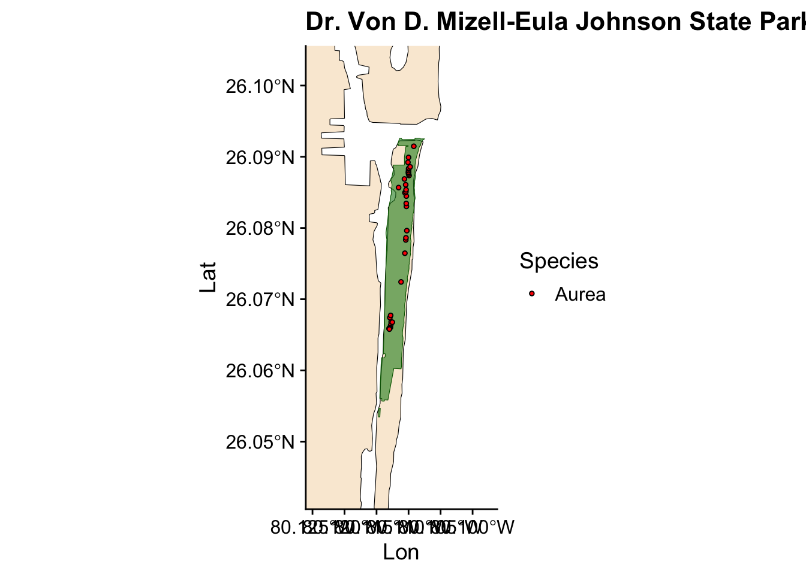
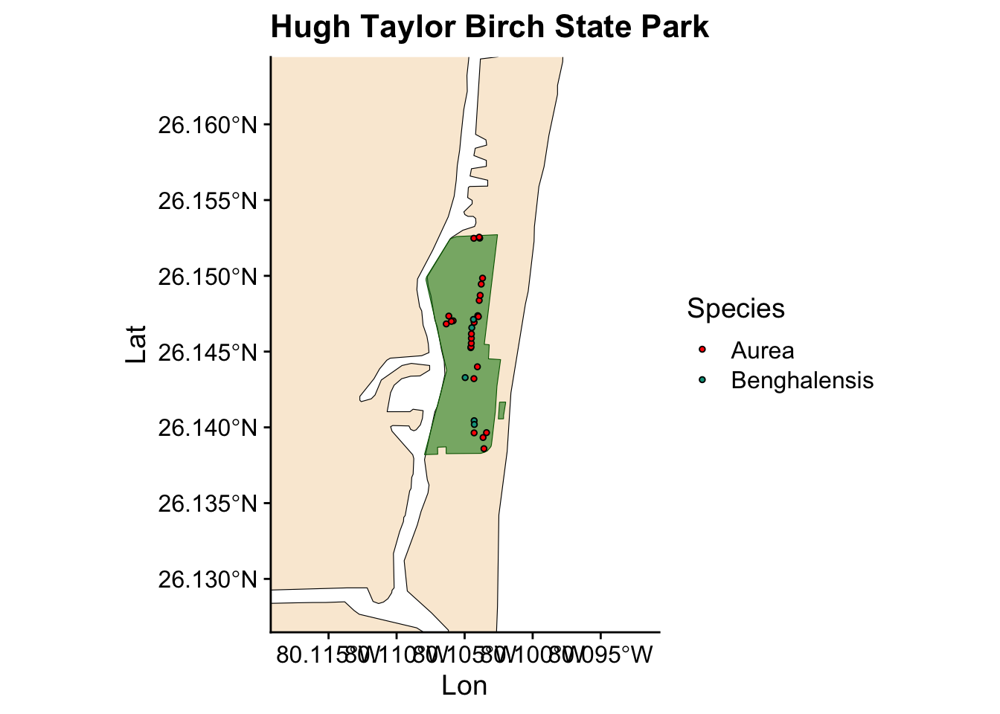
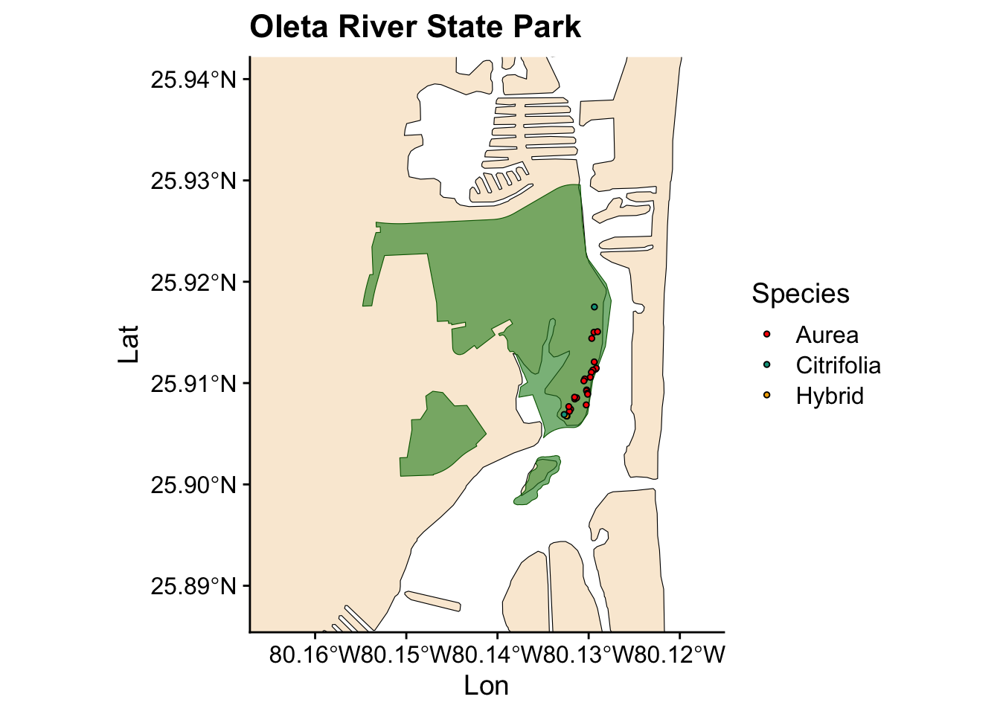
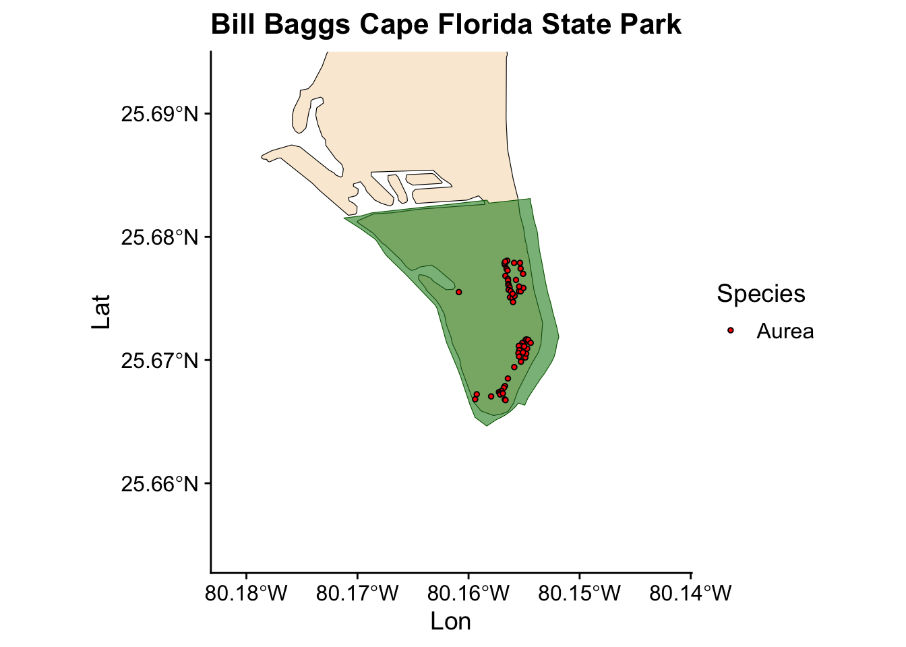
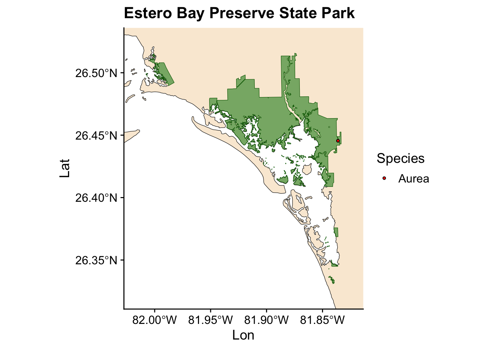

Code
library(tidyverse)
library(ggplot2)
library(cowplot)
library(sf)
library(wesanderson)Kevin Quinteros
July 18, 2025
I recently had to plot the locality data from our field work done in Florida State Park. Using R’s spatial data visualization tools, I combined occurrence records, park boundaries, and elevation data to show the locality of individuals that were geo-referenced.
I used shapefiles of the state of Florida and its state park boundaries. These shapefiles are publicly available, and I have provided the links below for anyone who wishes to use them.
Input Data:
Individual coordinate data.
Detailed_Florida_State_Boundary.shp: High-resolution Florida boundary shapefile.
Florida_State_Parks_Boundaries.shp: Shapefiles for all Florida State Parks.
Output:
I have preloaded my data. You can load your own data or occurrence data which I have provided in the github foilder associated with this post. - Ficus occurrence data
Reading layer `Florida_State_Parks_Boundaries' from data source
`/Users/kq/Projects/kquinteros_website/posts/2025-10-27-map-dist/Florida_State_Parks_Boundaries/Florida_State_Parks_Boundaries.shp'
using driver `ESRI Shapefile'
Simple feature collection with 178 features and 15 fields
Geometry type: MULTIPOLYGON
Dimension: XY
Bounding box: xmin: 65060.63 ymin: 62239.01 xmax: 793312 ymax: 758319.8
Projected CRS: NAD83(2011) / Florida GDL AlbersReading layer `Detailed_Florida_State_Boundary' from data source
`/Users/kq/Projects/kquinteros_website/posts/2025-10-27-map-dist/Detailed_Florida_State_Boundary/Detailed_Florida_State_Boundary.shp'
using driver `ESRI Shapefile'
Simple feature collection with 1 feature and 6 fields
Geometry type: MULTIPOLYGON
Dimension: XY
Bounding box: xmin: -134968.2 ymin: 2712255 xmax: 596284 ymax: 3448075
Projected CRS: NAD83 / UTM zone 17NTo start, we’ll tidy up the data and pick the state parks where we want to visualize our occurrence records.
# select ficus occurrence that occur in state park
species_occ <- species_occ[species_occ$Locality %in% c(
"Fakahatchee State Park", "Estero Bay", "Dr. Von D. Mizell State Park",
"Hugh Taylor Birch State Park", "Bill Baggs state Park",
"Oleta River State Park", "Charlotte Harbor Preserve State Park"
),]
#clean up species names and edit state park names in our occurence csv so they match the official state park titles.
species_occ <- species_occ |>
mutate(Species = case_when(
Species == "Aurea/Citrifolia?" ~ "Hybrid",
Species == "Aurea?" ~ "Unknown",
TRUE ~ Species
)) |>
mutate(Locality = case_when(
Locality == "Fakahatchee State Park" ~ "Fakahatchee Strand Preserve State Park",
Locality == "Estero Bay" ~ "Estero Bay Preserve State Park",
Locality == "Bill Baggs state Park" ~ "Bill Baggs Cape Florida State Park",
Locality == "Dr. Von D. Mizell State Park" ~ "Dr. Von D. Mizell-Eula Johnson State Park",
TRUE ~ Locality
))Next, we have to subset our florida state parks shape files. Additional, we don’t need to show the whole state of Florida, so we will crop the shapefile for the state to only focus on southern Florida.
#subset our shape files.
fl_parks <- fl_parks |> filter(SITE_NAME %in% c(
"Charlotte Harbor Preserve State Park", "Estero Bay Preserve State Park",
"Fakahatchee Strand Preserve State Park", "Bill Baggs Cape Florida State Park",
"Dr. Von D. Mizell-Eula Johnson State Park", "Hugh Taylor Birch State Park",
"Oleta River State Park"
))
#transform data
state <- st_transform(state, 4326)
#crop our Florida state park to only show southern Florida instead of the whole state.
south_florida_bbox <- st_bbox(c(xmin = -82.9, ymin = 24.9, xmax = -79.8, ymax = 27.6), crs = st_crs(state))
south_florida <- st_crop(state, st_as_sfc(south_florida_bbox))Warning: attribute variables are assumed to be spatially constant throughout
all geometriesNow, we are ready to plot our data
ggplot() +
geom_sf(data = south_florida, fill = "antiquewhite", color = "black") + #shapefile for south Florida)
geom_sf(data = fl_parks, fill = "forestgreen", alpha = 0.5, color = "darkgreen") + #shape file for florida state parks
geom_point(data = species_occ, aes(x = Lon, y = Lat, fill = Species), shape=21, color="black", size=1) + # ficus occurrence data
labs(title = "Ficus Occurrences in Florida State Parks") + # title
scale_fill_manual(values = wes_palette("Darjeeling1")) + # using the wes anderson color palette here
coord_sf(xlim = c(-82.7, -79.8), ylim = c(24.8, 27.5), expand = FALSE) + # adjust the size of the map
theme_cowplot() +
theme(panel.background = element_rect(fill = "aliceblue"), # all the setting below adjust title and other plot properties
plot.title = element_text(hjust = 0.5, face = "bold", size = 10),
axis.title.x = element_blank(),
axis.title.y = element_blank(),
panel.grid.major = element_blank(),
panel.grid.minor = element_blank(),
panel.border = element_rect(colour = "black", fill=NA, size=1.5),
text = element_text(size = 10))Warning: The `size` argument of `element_rect()` is deprecated as of ggplot2 3.4.0.
i Please use the `linewidth` argument instead.
Now we have a plot showing Ficus occurrences across all the state parks where we collected data. However, we also want to visualize the occurrences for individual parks. Instead of writing the same code for each park, we can automate this process by creating a loop.
for (park in unique(fl_parks$SITE_NAME)) { #start the loop
park_poly <- fl_parks[fl_parks$SITE_NAME == park, ] #select the park where we are mapping
park_occ <- species_occ[species_occ$Locality == park, ] #select individual that were collected in that park
if (nrow(park_poly) == 0 || st_is_empty(park_poly) || !st_is_valid(park_poly)) next # check that our shapefile is not empty
if (st_crs(park_poly) != st_crs(state)) park_poly <- st_transform(park_poly, crs = st_crs(state))
safe_name <- str_replace_all(park, "[^A-Za-z0-9]", "_")
bbox <- st_bbox(park_poly)
pad <- 0.01 # padding parameter f
xlim <- c(as.numeric(bbox$xmin) - pad, as.numeric(bbox$xmax) + pad) # create a small margin for the graph based on shapefile of park
ylim <- c(as.numeric(bbox$ymin) - pad, as.numeric(bbox$ymax) + pad)
print(
ggplot() +
geom_sf(data = state, fill = "antiquewhite", color = "black") +
geom_sf(data = park_poly, fill = "forestgreen", alpha = 0.6, color = "darkgreen") +
geom_point(data = park_occ, aes(x = Lon, y = Lat, fill = Species), shape=21, color="black", size=1) +
coord_sf(xlim = xlim, ylim = ylim) +
theme_cowplot() +
labs(title = park) +
scale_fill_manual(values = wes_palette("Darjeeling1"))
)
}



